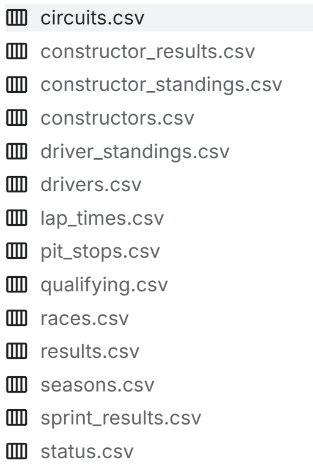

The goal of this project is to explore the posibility of creating a system that can recommend suitible Formula One races to watch for indiviuals or a group of people. A system like this would allow for fans of Formula One to easier find races to watch or for groups of friends to find races which would suit everyone the best. The prediction should be based on the users favorite drivers, constructors, circuits and, races to get more accurate predictions. A system like this does require large amounts of data to be accurate and thus a requirment for this project is to find a suitible dataset which holds information about all 1125 races in the history of Formula One (as of the end of the 2024 season).
Principal Component Analysis (PCA) is a statistical technique used to emphasize variation and bring out strong patterns in a dataset. It is often used to make data easy to explore and visualize. PCA works by transforming the original variables into a new set of variables, the principal components, which are orthogonal and capture the maximum variance in the data.
This system utilises the dataset "Formula 1 World Championship (1950 - 2024)" by Vopani on Kaggle which is linked below. As mentioned in the title of the dataset it contains every grand prix from 1950 and forwards with data about the circuits that have been used as venues, the drivers and consturctors that have competed in the championship, and qualification and race results. All the csv files that make up the dataset can be seen in the image below.

bla
bla
bla
blablablabla